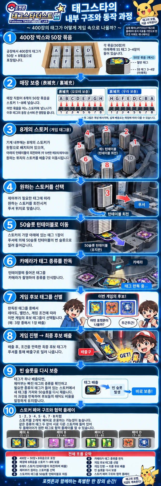

특허 JP7155177B2 로 살펴본 포켓몬 태그스타의 태그 배출 구조
태그스타를 플레이하다 보면 한 가지 궁금증이 생깁니다. 화면에 등장한 포켓몬과 실제로 배출되는 태그는 어떻게 연결되는 걸까요?
단순히 기계 안에서 다음 태그 한 장이 순서대로 나오는 구조일까요? 아니면 기계가 내부에 어떤 태그가 있는지 알고, 그중 하나를 골라서 배출하는 구조일까요?
이 질문을 이해하는 데 중요한 자료가 일본 Marvelous가 출원한 특허 JP7155177B2 「배출기구 및 게임장치(配出機構およびゲーム装置)」입니다. 2020년 1월 23일 출원됐고, 발명자는 土手真悟(도테 신고)·大林武尊(오바야시 타케루)입니다. 특허의 목적은 게임 결과에 따라 서로 다른 배출물을 효율적으로 선택해 배출하는 게임장치를 구현하는 것입니다.
먼저 밝혀 둡니다. 아래 내용은 특허 명세서를 기반으로 구조를 정리한 것입니다. 실제 상용 태그스타 기기의 소프트웨어와 내부 구성이 특허 실시예와 100% 동일하다고 단정할 수는 없습니다. 특허는 «이런 구조로 만들 수 있다»를 적은 문서이지 «이 기계가 지금 이렇게 돌고 있다»를 보증하는 문서가 아닙니다.

이 특허에서 가장 중요한 것은 태그를 저장하는 대량 재고부와 실제 게임에서 쓸 후보 태그를 보관하는 부분이 분리되어 있다는 점입니다.
게임기 내부에는 여러 개의 스토커가 있고 이곳에 많은 태그가 쌓여 있습니다. 하지만 스토커에서 태그가 바로 플레이어에게 나오는 것이 아닙니다. 중간에 배출후보 유지부(配出候補保持部)라는 별도의 원형 구조가 있습니다.
실시예에서는 이곳에 총 50개의 유지판이 있고 각각 실제 태그 한 장을 보관합니다. 특허는 제1~제5 슬롯을 메모리용, 제6~제25 슬롯을 Rare, 제26~제50 슬롯을 Normal로 구성하는 예를 제시합니다.
즉 이 시스템은 단순한 «다음 태그 한 장 배출» 방식보다 훨씬 복잡합니다. 이전 세대 기기처럼 배열표 순서대로 나오는 것이 아니라, 게임기가 무엇을 줬는지 기억하고 무엇을 줄지 제어할 수 있도록 설계되었습니다.
기계 구조에는 두 개의 주요 동작부가 있습니다. 제1 동작부에는 여러 스토커가 원형으로 배치되어 있고, 그 바깥쪽을 둘러싸는 형태로 제2 동작부, 즉 50개의 배출 후보 유지판이 있습니다.
중요한 점은 두 부분을 독립적으로 제어할 수 있다는 것입니다. 특허 청구항에서도 제1 동작부는 회전 가능하며 복수의 스토커가 그 위에 원형으로 배치되고, 제2 동작부는 그 바깥쪽에 위치한다고 설명합니다.
따라서 흔히 말하는 «스토커가 회전한다»는 표현은 조금 부정확합니다. 정확하게는 스토커 하나하나가 도는 것이 아니라, 스토커들이 올라간 원형 동작부 전체가 회전합니다. 그리고 50슬롯 후보부 역시 별도의 모터로 회전할 수 있습니다.
태그를 후보 풀로 옮길 때는 푸셔가 사용됩니다. 예를 들어 Rare 태그가 필요하면, 제어부가 Rare가 들어 있는 스토커와 특정 빈 유지판을 푸셔 위치로 맞춥니다. 그다음 스토커 최하단에 있는 태그 한 장을 밀어서 50슬롯 후보부로 보냅니다.
실시예에서는 Rare 태그가 든 제3 스토커와 제6 유지판을 맞춘 뒤, 스토커 최하단의 Rare 태그를 제6 유지판으로 밀어냅니다. 즉 스토커 안에서는 아래쪽 태그부터 소비됩니다.
50슬롯 후보부로 태그가 들어오면 끝이 아닙니다. 해당 슬롯을 카메라 아래로 이동시킨 뒤 태그의 식별정보를 촬영합니다. 이를 통해 게임기는 어느 슬롯에 / 어떤 태그가 들어 있고 / 어떤 캐릭터인지를 알게 됩니다.
이 정보를 특허에서는 유지판 테이블 정보(保持板テーブル情報)로 저장합니다. 개념적으로는 내부에 이런 표가 있는 셈입니다.
| 슬롯 | 태그 |
|---|---|
| 6 | Rare A |
| 7 | Rare B |
| 8 | Rare C |
| 24 | Rare H |
| 26 | Normal A |
| 27 | Normal B |
따라서 50슬롯은 단순한 회전판이 아니라 어떤 태그가 어느 위치에 있는지 알고 있는 활성 재고 풀이라고 보는 것이 더 정확합니다.
이 특허에서 가장 흥미로운 부분입니다. 게임이 시작되면 게임처리수단이 플레이어 정보를 기반으로 배출 후보 태그를 먼저 가선택합니다. 2인 플레이 실시예에서는 각 플레이어에게 6개의 실제 배출 후보를 게임 시작 전에 정합니다. 이 후보들은 앞서 만들어진 50슬롯 테이블에서 선택됩니다.
따라서 이 실시예에서는 게임이 완전히 끝난 뒤 처음부터 태그를 고르는 구조가 아닙니다. 물리적으로 존재하는 태그 중 일부가 이미 게임 전에 후보로 잡힐 수 있습니다.
가선택한 후보가 모두 실제 획득 가능한 것은 아닙니다. 게임이 끝난 뒤 게임처리수단은 게임 결과에 따라 가선택한 후보의 일부 또는 전부를 최종 후보로 선택합니다. 그 후 화면에 해당 태그를 표시하고 플레이어가 그중 하나를 고릅니다.
이 점이 중요합니다. 특허 구조상 실제 태그 재고와 게임 화면의 후보가 서로 독립적이지 않을 수 있기 때문입니다.
실시예에서는 Player 1이 제6 유지판의 Rare A를, Player 2가 제24 유지판의 Rare H를 선택합니다. 그러면 게임기는 제1·제2 동작부와 푸셔를 독립적으로 움직여 해당 유지판을 정확한 배출 위치에 맞춥니다. 이후 푸셔가 태그를 배출로로 밀어내고, 태그는 중력으로 배출구까지 이동합니다.
즉 기계가 선택 이후에 태그를 «찾는» 것이 아닙니다. 이미 어느 슬롯에 있는지 알고 있기 때문에 바로 그 위치로 이동시키는 구조입니다.
특허에는 더 흥미로운 내용도 있습니다. 두 플레이어에게 같은 종류의 배출물이 각각 가선택된 경우, 게임처리수단이 협력 플레이를 실행할 수도 있다고 설명합니다.
예를 들어 Player 1과 Player 2에게 각각 실제 Rare A 한 장씩이 후보로 잡혔다면, 이를 이용해 두 사람이 함께 플레이하는 게임을 실행할 수 있습니다.
이 부분은 태그 재고 상태가 단순히 «마지막 배출 결과»에만 쓰이는 것이 아니라, 게임 내용 자체를 결정하는 조건으로 활용될 수도 있다는 의미입니다.
태그가 배출되면 해당 슬롯은 빈 상태가 됩니다. 게임기는 이 빈 슬롯 역시 인식할 수 있습니다. 특허에서는 유지판 자체에 식별코드를 붙여 어떤 슬롯이 비었는지 관리하는 방법까지 설명합니다.
그리고 게임 종료 후 또는 후보 수가 일정 수준 이하로 줄었을 때 자동으로 보충할 수 있습니다. 특히 Rare가 배출되었는지 확인한 뒤 그에 맞는 태그를 다시 채워 넣는 방식이 설명되어 있습니다. 즉 후보 풀을 계속 일정한 구성으로 유지할 수 있습니다.
실시예에서는 50슬롯 중 Rare를 20장 유지하도록 설정합니다. 제어부는 Rare가 20장보다 부족하면 Rare 스토커에서 계속 태그를 가져와 채우고, 20장이 되면 Normal을 채우기 시작합니다.
따라서 이 구조는 단순 재고 관리가 아니라 후보 풀의 종류별 구성 비율을 소프트웨어적으로 유지할 수 있는 구조입니다.
주의. 특허의 Rare와 Normal은 특허 설명을 위한 분류입니다. 이를 실제 태그스타의 6성·5성·4성 등급과 그대로 대응한다고 단정할 수는 없습니다.
이 특허만 놓고 보면 «완전 랜덤»이라고 볼 근거는 없습니다. 핵심은 오히려 이렇습니다.
물론 실제 상용 게임에서 이 과정 안에 난수나 확률 테이블을 사용할 가능성은 충분히 있습니다. 그러나 JP7155177B2 자체에는 «50개 중 완전히 무작위로 태그를 뽑는다»는 규칙이 핵심으로 기술되어 있지는 않습니다.
저는 이 게임을 기록하면서 기계 내부와 플레이 로그를 따로 모아 왔습니다. 특허를 읽고 나서 그 기록과 대조해 보니, 맞아떨어지는 것이 셋 있었습니다.
| 플레이 기록에서 관찰한 것 | 특허가 말하는 것 |
|---|---|
| 배출용 스토커는 8통이고 통당 50장. ★6은 각 통 맨 아래 3~4장 | 스토커 최하단 태그부터 푸셔로 밀어낸다 |
| 통에서 곧장 나오지 않고 중간 저장소를 거치며, 거기 있는 카드만 화면에 뜬다 | 50슬롯 배출후보 유지부를 반드시 거친다 |
| 스페셜태그배틀은 저장소에 같은 ★6 두 장이 있을 때 발동한다 | 두 플레이어에게 같은 종류가 가선택되면 협력 플레이를 실행할 수 있다 |
세 번째가 특히 흥미로웠습니다. 저는 이것을 플레이 관측만으로 추측하고 있었는데, 특허에는 그것이 설계 의도로 적혀 있었습니다.
반대로 제가 틀렸던 것도 하나 있었습니다. 배출 경로에서 스캐너를 찾지 못해 «기계는 배출된 카드를 광학적으로 알지 못하고 내부 계수로만 추적할 것»이라고 적어 두었는데, 특허는 카메라로 식별한다고 명시합니다. 근거가 «없다는 증거»가 아니라 «못 찾았다»였던 자리입니다.
그래도 «★6 예측»은 만들 수 없습니다. 오히려 특허를 읽고 나니 그 판단이 더 분명해졌습니다. 후보가 게임이 시작되기 전에 플레이어 정보를 근거로 정해진다면, 화면에 뜨는 것은 이미 정해진 결과입니다. «몇 판을 쳤으니 이제 나올 때가 됐다»를 계산할 자리가 애초에 없습니다.
이 사이트의 공략 도구는 위 배출 구조와 무관하게, 플레이어가 통제할 수 있는 유일한 변수인 «격파»를 돕는 데만 집중합니다. 보스별 약점과 3턴 로테이션은 보스별 공략에 정리해 두었습니다.